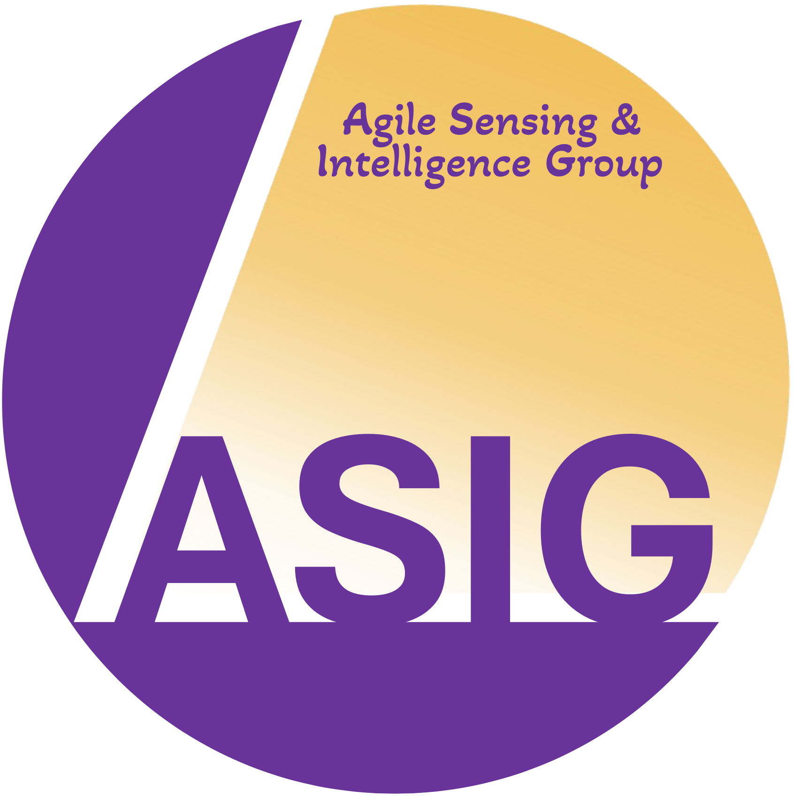

Agile Sensing and Intelligence Group (ASIG) Bernoulli Institute for Mathematics, Computer Science and Artificial Intelligence ASIG-X (Github) | YouTube | Contact: kailai.li [at] rug [dot] nl |
 |
{kind=link}
The Agile Sensing and Intelligence Group (ASIG), led by Kailai Li, is a research group based at the University of Groningen (RUG) in the Netherlands with an extension at Linköping University (LiU) in Sweden. We constantly look for strong candidates for PhD/postdoc/internship/thesis. Shoot us an email with a brief intro if you are interested, and we will start from this!
== News ==
-
2024-06: We have now vancancy for PhD position in Multisensory Autonomy for Intelligent Mobile Systems at Bernoulli Institute, University of Groningen. Application deadline is June-12 2024. Check it out and join us!
-
2024-05: We have Tudor now, our quadruped robot for research on high-performance intelligent mobile systems. Check out the news at Bernoulli Institute!
-
2024-04: We have released ser2res, a miniature open-source rviz2 plugin for resetting displays with service in ROS2. Ziyu is main author for implementation. Check out our code there!
-
2024-04: We have now launched our group's website here and Github account under ASIG-X. Our future opensource projects will be released here exclusively. Stay tuned!
People
-
Kailai Li (Group leader, assistant professor at University of Groningen)
-
Ziyu Cao (PhD student at Linköping University)
-
Qihao Yuan (Incoming PhD student at University of Groningen)
-
Bangguo Yu (PhD student at University of Groningen, with Prof. Ming Cao)
-
Peng Liu (PhD student at Linköping University, with Prof. Fredrik Gustafsson)
-
Elias William (Master's student at Linköping University)
Research Profile
Our major research interests lie in agile sensing and trustworthy inference in the general domain of understanding physical and cyber-physical systems, with applications to sensor fusion, robotic perception, and learning dynamical systems. We are also interested in developing planning and control methods for uncertain dynamical systems and have the ambition to methodologically unify these aspects through new representations and models with real-world validation. Check out some of our open-source robotic systems below
-
LiLi-OM (The first solid-state LiDAR-inertial odometry and mapping system)
-
SFUISE (The first continuous-time UWB-inertial motion estimation system)
Granted Projects
-
Cybersecurity with Focus on Realiable Sensing and Autonomy
Subject area including 1 Asst. Prof, 2 PhD students and 2 postdocs funded by WASP, Sweden [link]
Acquired amount: about 20M SEK in total. Project duration: 2024-2028
(Granted but declined by Kailai Li)
-
Computational Agile Sensing and Inference for Intelligent Systems
Funded within the ZENITH Program by Linköping University, Sweden [link]
Acquired amount: 600,000 SEK/year for 5 years. Project duration: 2024-2028. [Project Page]
-
POMAS – Pose Estimation and Mapping Using Heterogeneous Sensor Networks
Funded within the Software Campus Program by the Federal Ministry of Education and Research (BMBF), Germany [link]
In cooperation with Trumpf GmbH + Co. KG as industrial partner
Acquired amount: 100,000 EUR. Project duration: 2020-2022.
Distinctions
- 2023: Best Student Paper Finalist at the 31st European Signal Processing Conference, EUSIPCO 2023 [link]
- 2022: Jean-Pierre Le Cadre Best Paper Award: First Runner-Up by the International Society for Information Fusion (ISIF) at FUSION 2022 [link]